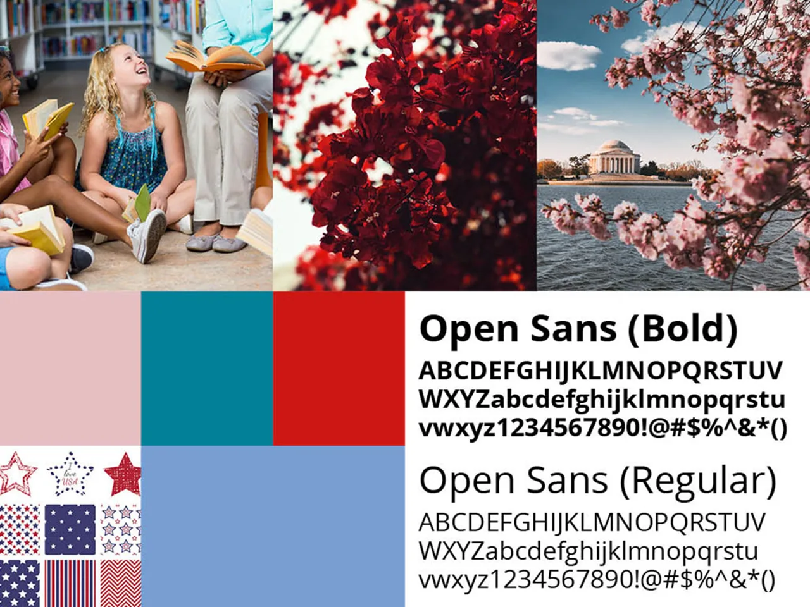
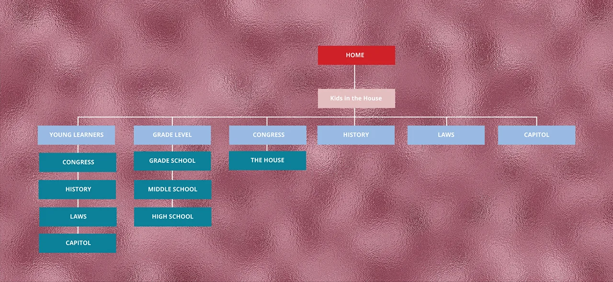

Software Used: Adobe XD, Illustrator, and InDesign
Website Redesign
The goal for this school project was to produce a functioning prototype/website using usability, user experience, and visual design industry standards for a government or association website. Kids in the House is a government website that targets students from the grade level of the elementary, middle, and high school providing education and information about the three branches of the United States Government, the House of Representatives, the process of the three branches, and the House history. Here is the link to view the website: https://kids-clerk.house.gov. I wanted to make the website more appealing to students from 0-5th grade, 6th-8th grade, and 9th-12th grade. I added a gradient background with stars and a flag. I also added a carousel, hover state to the navigation and a link to the YouTube channel for the Kids in the House History page.
Kids in the House Mobile
For the mobile version, same as the desktop version, on the main page, the Young Learners, Grade Levels, Congress, and History is available on the navigation. You will find other available links as well as a link to the YouTube Channel.
Low-Fidelity & High-Fidelity Wireframe
Moodboard
For the first version of the moodboard, I went with pink, blue, and red because I like the subtlety of the colors. When I was coming up with a concept of my website for Kids in the House, I was thinking of a simplistic style. I used pink for a calm view of the website, blue for an engaging and inviting feel to navigate through the website and red for an intense and attention-getting of the website. For the font Knewave, I used for the title and heading of the prototype. Knewave is showing the playfulness of the website at the same time encouraging students to want to learn.
With the second version of the moodboard, I kept the same colors and added a lighter shade of blue instead of the darker green that is shown in the first moodboard. The lighter shade of blue complimented well with the pink, red, and the turquoise blue. I wanted a web-safe font that was readable for viewers so I used Open Sans for the body text.
Card Sorting
With card sorting, I put together the structure of the website and the idea behind it was to recategorize the topics where users can understand where the navigation leads them and to get a full concept of the website.
Sitemap
This is how Kids in the House website is structured which shows level 1, level 2, level 3 and continuously repeats making it difficult to know which page links to which grade level. When asking users about what they thought would benefit the website they said: make the page more modern but fun, it needs to be a great learning experience, it needs to be less cluttered and better organized between text and images, and it should teach young kids about the government in a fun and playful way to engage them to learn.
With the redesign sitemap, I kept Young Learners as level 1 and added Congress, History, Laws, and Capitol as level 2. I then categorized Grade School, Middle School, and High School as level 2 for Grade Levels. From there, the House became level 2 for Congress and History, Laws, and Capitol became standalone for level 1. My direction of the website was to make sure that the Young Learners page was more focus on students who are kindergarten and Grade Level focusing more on elementary, middle, and high school students.
Low-Fidelity & High-Fidelity User Flow
Creating a user flow was not part of my class assignment, but I wanted to create a user flow showing how to navigate on the Kids in the House website using Adobe XD. On the mobile device, you would click the hamburger menu, a dropdown menu appears showing Young Learners, Grade Levels, Congress, History, Laws, and Capitol. Click the “Young Learners” tab and another dropdown menu appears. Hover over to “Young Learners” which turns blue and click it. You are now on the Young Learners page, scroll down to “How a Bill Becomes a Law”. Click read more and the page explains how a bill is introduced. You can scroll to the top of the page where the logo “Kids in the House” is or the bottom of the page “Back to Home Page”.
To view the prototypes for both High-Fidelity and Low-Fidelity Wireframes, please visit the Presentation page...


{kind=link}
{kind=link}
{kind=link}
{kind=link}
{kind=link}
{kind=link}
{kind=link}
{kind=link}
{kind=link}
{kind=link}
{kind=link}
{kind=link}